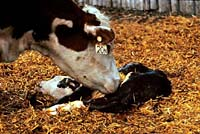

Spring calving is the most popular system used in Saskatchewan. With this program, calves are born each year sometime between February and May. A fall calving system can also be used. This does require some additional management, but fall calving can be advantageous. For instance:- There are better conditions at calving time.
- Less mud and a cleaner environment can reduce the incidence of disease.
- Calves are not born in the cold weather and are more likely to survive. These calves are larger and have higher nutritional requirements when there is a surplus of high quality pasture available.
The major disadvantage of the fall calving program is that mixed farm operations (those which raise livestock and grow crops) are busy with harvest.
The gestation period for cattle is about 282 days or 9 months. This means that cows should be bred between May and August. This breeding season typically lasts about 45 days. Not all cows will be bred successfully the first time. Successful conception rates are about 85-90% for natural breeding and can be much lower if artificial insemination is used. A cow will only become pregnant if bred at the proper stage of her estrous cycle. If not successfully bred, a cow will not conceive until they come back into heat 21 days later.
Heifers (females which have never had a calf before) should be bred shortly after reaching puberty (15 months of age) so that they have their first calf at 2 years of age. Heifers should be bred to easy calving sires, (those with a history of lighter calf birth weights), because heifers have smaller body sizes than mature cows.
In the beef industry, most breeding programs make use of bulls instead of artificial insemination. Natural breeding typically has a higher success rate than artificial insemination. Bulls that are to be used for breeding, should be at least 2 years old. They can reach reproductive maturity at 15 months of age, yet younger bulls may not be as successful.
Calving
The calving season is usually between February and May. Later in the season is usually favored because warmer temperatures will not require animals to be housed in barns. Warmer weather also results in fewer death losses resulting from freezing. Those calves born earlier in the season will be heavier at weaning time so can be more profitable at sale time.
Many cows do not need assistance, but it is best to keep accurate records of breeding dates, so that expectant cows or heifers can be monitored and assisted at calving time. Young heifers (first time calving) are more likely to require assistance because of their small pelvic opening. A calf may get stuck, or be in the wrong position for birth. Calves should be positioned so they are born head first, with their front legs extended forward. Legs in the wrong directions, turned heads or other problems can be quickly resolved if births are supervised. As cows get older, they often require less assistance.
New born calf
A newborn calf will weigh between 25 - 50 kg. Calves will be licked clean by their mother and this helps in establishing a bond between the two. A newborn calf will have difficulty standing at first, but will eventually stand and suck milk from its mother. The calf should start suckling within the first 4 - 6 hours. If it doesn't, it should be assisted, or tube fed colostrum. Colostrum (first milk), contains antibodies which can be absorbed by the calf intact and will provide the calf with some immunity to infection and disease for the first 2 - 3 weeks of life until its own immune system develops. It is also a good idea to dip the navel with an iodine solution to prevent infection. Injections of vitamins and minerals may also be given shortly after birth on some farms.
Weaning / Castration / Dehorning
Calves are kept with their mothers on pasture during the summer and permitted to suck. As the calf grows larger, the cow is no longer capable of obtaining enough nutrients from the pasture to producing sufficient milk. The calf will begin to graze or may be provided with creep feed (concentrate with mineral and vitamins).
Calves are weaned (removed from mother and no longer permitted to suckle) in October or November just before the first snowfall. Depending upon the breed, they may weigh between 225 - 325 kilograms.
Prior to weaning, (about 4 months of age) males not intended for breeding programs may be castrated, branded and dehorned. Surgical removal of the testicles reduces aggression in males, and generally results in a more tender carcass at maturity. Dehorning or using a poled breed (one without horns) is done with caustic paste, heat treatment, special tools or saws, to reduce the incidence of injury to ranchers and other animals.
Immunization Programs
Calves are commonly vaccinated to provide immunity against clostridial diseases such as blackleg, infectious bovine rhinotracheitis (IBR), Bovine virus diarrhea (BVD), and scours. Many of these disease can greatly reduce the growth and feed efficiency of animals or result in death if preventative measures are not taken.
|